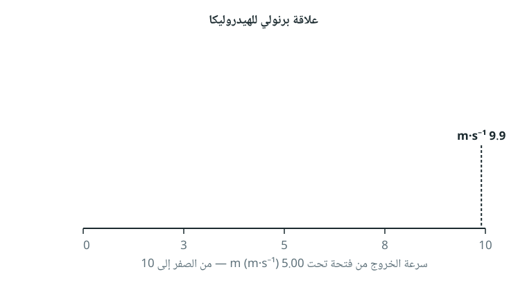

علاقة برنولي للهيدروليكا
Bernoulli head relation
علاقة برنولي تصف حفظ الطاقة في جريان سائل مثالي غير قابل للانضغاط: مجموع ارتفاع الضغط والارتفاع الهندسي وارتفاع السرعة ثابت على خط انسياب. تُستعمل في حساب معدل التصريف من الفتحات وفي تصميم أنابيب بيتراند وفي قياس السرعة بمقياس بيتو.
على خط انسياب في سائل مثالي غير لزج وغير قابل للانضغاط، يبقى المجموع التالي ثابتاً: p/(ρg) + z + v²/(2g) = ثابت، حيث p الضغط وz الارتفاع وv السرعة وρ الكثافة وg تسارع الجذب. والحدود الثلاثة تُقاس بالمتر وتُسمّى ارتفاعات: ارتفاع ضغط وارتفاع هندسي وارتفاع سرعة. مثال: خزان مفتوح سطحه على ارتفاع 5.00 m فوق فتحة صغيرة، والضغط الجوي على السطحين. بتطبيق برنولي بين السطح والفتحة: v = √(2g·h) = √(2 × 9.80665 × 5.00) = 9.90 m/s.
كيف تعمل الظاهرة؟
برنولي تعبير عن حفظ الطاقة لوحدة الحجم من السائل. فالسائل الذي يتحرك أسرع يملك طاقة حركة أكبر، ولأن الطاقة الكلية محفوظة في غياب الاحتكاك، يجب أن تنقص الطاقة الأخرى: إما طاقة الضغط أو طاقة الارتفاع. ولهذا حين يضيق الأنبوب تزداد السرعة بحكم الاستمرارية فيقلّ الضغط. وليس السبب أن السائل «يسحب» الضغط، بل أن الطاقة توزعت توزيعاً مختلفاً. وهذا يفسّر رفع الطائرة جزئياً: الهواء الأسرع فوق الجنحان أقل ضغطاً من الهواء الأبطأ تحته.
العلاقة بالأرقام
p/(ρg) + z + v²/(2g) = ثابت. ومنه v = √(2g·h) لخزان مفتوح، وp₁ − p₂ = ½ρ(v₂² − v₁²) لأنبوب أفقي. مثال: h = 5.00 m → v = √(2 × 9.80665 × 5.00) = √98.0665 = 9.903 m/s. ومعدل التصريف من فتحة مساحتها 1.00×10⁻⁴ m²: Q = A·v = 1.00×10⁻⁴ × 9.903 = 9.90×10⁻⁴ m³/s = 0.990 L/s. ولتصريف 1.00 L/s يلزم ارتفاع h = v²/(2g) = (10.0)²/(2×9.80665) = 5.10 m.
مفاهيم متقاربة
يُفرَّق بين برنولي ومعادلة الطاقة الممتدة: الممتدة تضيف فقد الاحتكاك h_f ومضخة h_p، وبرنولي حالة خاصة بلا فقد. ويُفرَّق بين الجريان المستقر والمتغير: برنولي تفترض استقراراً. ويُفرَّق بين السائل المثالي واللزج: في اللزج يتغير الضغط على المقطع لا فقط على خط الانسياب. وأخيراً يُفرَّق بين الضغط الساكن والكلي في القياس: مقياس الضغط الجداري يقيس الساكن، ومقياس بيتو المتجه للأمام يقيس الكلي.
حدود التطبيق
العلاقة تفترض سائلاً غير لزج، فتنحرف في الأنابيب الطويلة حيث يفقد الاحتكاك ضغطاً كبيراً. وتفترض جرياناً مستقراً غير قابل للانضغاط، فلا تُستعمل للغازات عند سرعات عالية حيث تتغير الكثافة، ولا للجريان النابض. ولا تصف الجريان المضطرب الشديد حيث تتوزع السرعة توزيعاً غير منتظم على المقطع، فيُستعمل معامل تصحيح حركي. كذلك لا تُستعمل عند وجود دوامات أو انفصال جريان، حيث تتحول الطاقة إلى فقد لا إلى ضغط.

| الكمية | القيمة | المصدر |
|---|---|---|
| سرعة الخروج من فتحة تحت 5.00 m | 9.90 m·s⁻¹ | [2] |
| فرق الضغط بين مقطعين 0.0100 و0.00250 m² | 1 875 Pa | [2] |
المصادر
- 1 CODATA Value: molar gas constant — NIST — CODATA 2022 recommended values (2024). physics.nist.gov/cgi-bin/cuu/Value?r · اطُّلع عليه 2026-11-21
- 2 University Physics Volume 1 — 14.6 Bernoulli's Equation — OpenStax, Rice University (2026). openstax.org/books/university-physics-volume-1/pages/14-6-bernoullis-equation · اطُّلع عليه 2026-11-21
استشهد بهذا المصطلح
الصيغتان مبنيتان من بيانات الصفحة نفسها: العنوان والتاريخ ورابط النسخة المنشورة.
علاقة برنولي للهيدروليكا — Bernoulli head relation. (2026). ديوان المعرفة — انفراد. https://infiradev.com/diwan/terms/term-bernoulli-head.html
@misc{term-bernoulli-head2026,
title = {علاقة برنولي للهيدروليكا},
titleaddon = {Bernoulli head relation},
howpublished = {{ديوان المعرفة — انفراد} — مرجع علمي عربي},
year = {2026},
url = {https://infiradev.com/diwan/terms/term-bernoulli-head.html},
urldate = {2026-11-26},
note = {مراجعة علمية: hermes (مراجعة معتمدة 2026-11-26)}
}
راجعه: hermes (مراجعة معتمدة 2026-11-26) · 2026-11-26 · آخر تحديث 2026-11-21